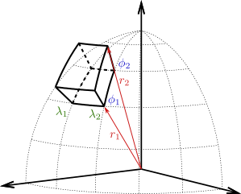
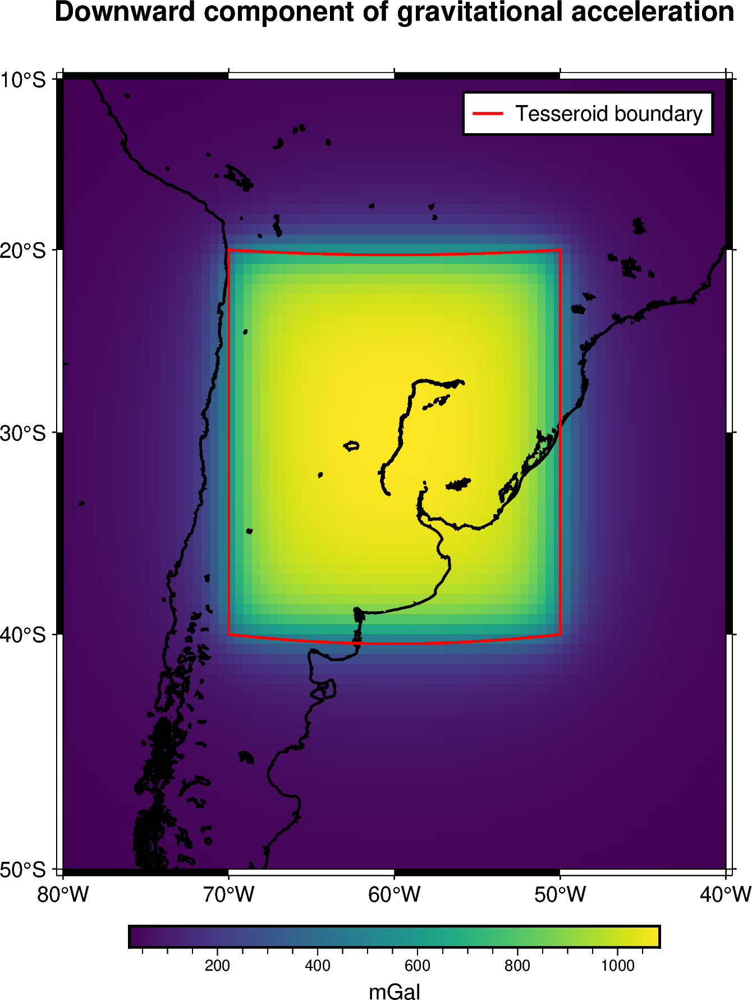
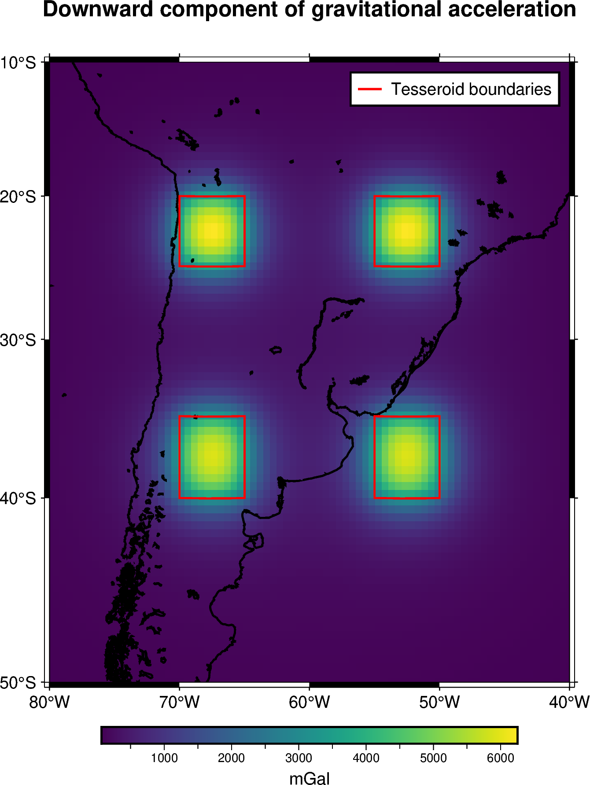
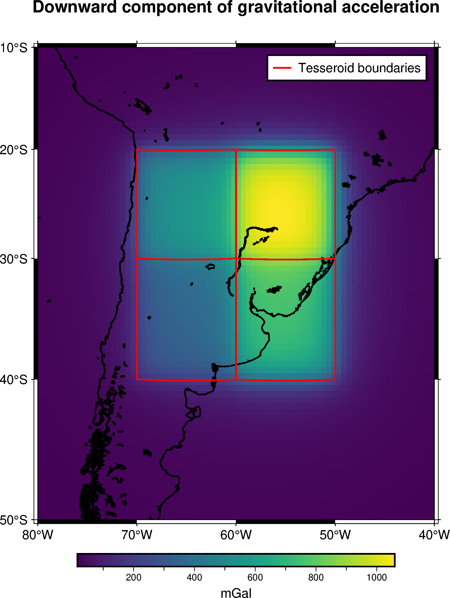
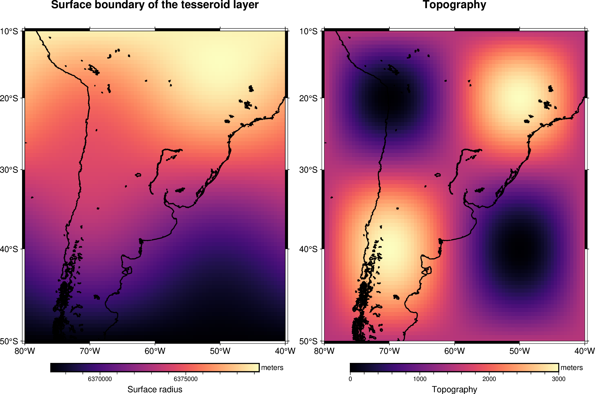
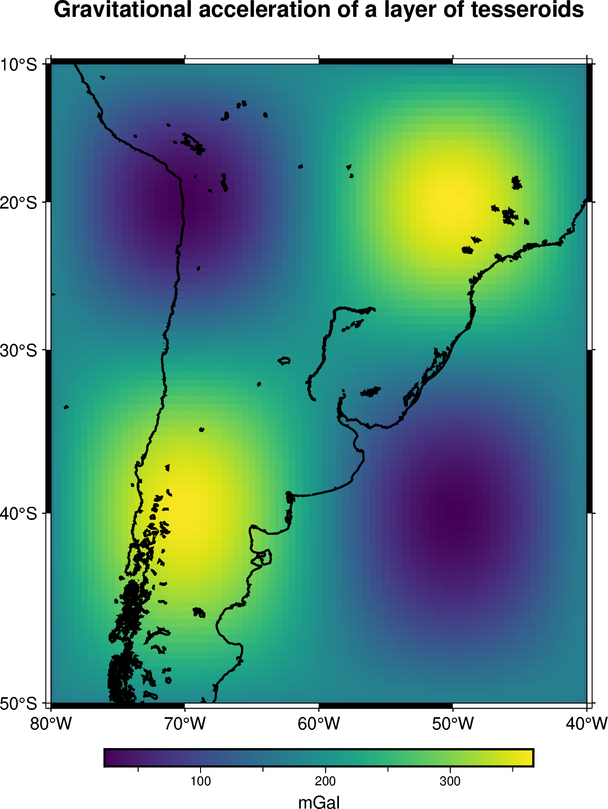

Tesseroids#
When our region of interest covers several longitude and latitude degrees, utilizing Cartesian coordinates to model geological structures might introduce significant errors: they don’t take into account the curvature of the Earth. Instead, we would need to work in Spherical coordinates. A common approach to forward model bodies in geocentric spherical coordinates is to make use of tesseroids.
A tesseroid (a.k.a spherical prism) is a three dimensional body defined by the volume contained by two longitudinal boundaries, two latitudinal boundaries and the surfaces of two concentric spheres of different radii (see Figure: Tesseroid).
{kind=link}

Figure: Tesseroid#
Tesseroid defined by two longitude coordinates (\(\lambda_1\) and \(\lambda_2\)), two latitude coordinates (\(\phi_1\) and \(\phi_2\)) and the surfaces of two concentric spheres of radii \(r_1\) and \(r_2\). This figure is a modified version of [Uieda2015].
Through the harmonica.tesseroid_gravity function we can calculate the
gravitational field of any tesseroid with a given density on any computation
point. Each tesseroid can be represented through a tuple containing its six
boundaries in the following order: west, east, south, north, bottom,
top, where the former four are its longitudinal and latitudinal boundaries in
decimal degrees and the latter two are the two radii given in meters.
These two radii represent the top and bottom surfaces of the tesseroid, and should be given as distances from the center of the Earth. Note this is different from the vertical boundaries used for prisms in Cartesian coordinates, which are given as heights above or below some reference level (e.g., mean sea level or a reference ellipsoid).
Note
The harmonica.tesseroid_gravity numerically computed the
gravitational fields of tesseroids by applying a method that applies the
Gauss-Legendre Quadrature along with a bidimensional adaptive discretization
algorithm. Refer to [Soler2019] for more details.
Lets define a single tesseroid and compute the gravitational potential it generates on a regular grid of computation points located at 10 km above its top boundary.
Get the WGS84 reference ellipsoid from boule so we can obtain its mean
radius:
import boule as bl
ellipsoid = bl.WGS84
mean_radius = ellipsoid.mean_radius
Define the tesseroid and its density (in kg per cubic meters):
tesseroid = (-70, -50, -40, -20, mean_radius - 10e3, mean_radius)
density = 2670
Define a set of computation points located on a regular grid at 100 km above the top surface of the tesseroid:
import bordado as bd
coordinates = bd.grid_coordinates(
region=[-80, -40, -50, -10],
shape=(80, 80),
non_dimensional_coords=100e3 + mean_radius,
)
Lets compute the downward component of the gravitational acceleration it generates on the computation point:
import harmonica as hm
gravity = hm.tesseroid_gravity(coordinates, tesseroid, density, field="g_z")
Important
The downward component \(g_z\) of the gravitational acceleration computed in spherical coordinates corresponds to \(-g_r\), where \(g_r\) is the radial component.
And finally plot the computed gravitational field
import pygmt
import verde as vd
grid = vd.make_xarray_grid(
coordinates, gravity, data_names="gravity", extra_coords_names="extra")
fig = pygmt.Figure()
title = "Downward component of gravitational acceleration"
with pygmt.config(FONT_TITLE="12p"):
fig.grdimage(
region=[-80, -40, -50, -10],
projection="M-60/-30/10c",
grid=grid.gravity,
frame=["a", f"+t{title}"],
cmap="viridis",
)
fig.colorbar(cmap=True, frame=["a200f50", "x+lmGal"])
fig.coast(shorelines="1p,black")
# Plot edges of tesseroid
fig.plot(
x=[tesseroid[0], tesseroid[1], tesseroid[1], tesseroid[0], tesseroid[0]],
y=[tesseroid[2], tesseroid[2], tesseroid[3], tesseroid[3], tesseroid[2]],
pen="1p,red",
label="Tesseroid boundary",
)
fig.legend()
fig.show()

Multiple tesseroids#
We can compute the gravitational field of a set of tesseroids by passing a list
of them, where each tesseroid is defined as mentioned before, and then making
a single call of the harmonica.tesseroid_gravity function.
Lets define a set of four prisms along with their densities:
tesseroids = [
[-70, -65, -40, -35, mean_radius - 100e3, mean_radius],
[-55, -50, -40, -35, mean_radius - 100e3, mean_radius],
[-70, -65, -25, -20, mean_radius - 100e3, mean_radius],
[-55, -50, -25, -20, mean_radius - 100e3, mean_radius],
]
densities = [2670 , 2670, 2670, 2670]
Compute their gravitational effect on a grid of computation points:
coordinates = bd.grid_coordinates(
region=[-80, -40, -50, -10],
shape=(80, 80),
non_dimensional_coords=100e3 + mean_radius,
)
gravity = hm.tesseroid_gravity(coordinates, tesseroids, densities, field="g_z")
And plot the results:
grid = vd.make_xarray_grid(
coordinates, gravity, data_names="gravity", extra_coords_names="extra")
fig = pygmt.Figure()
title = "Downward component of gravitational acceleration"
with pygmt.config(FONT_TITLE="12p"):
fig.grdimage(
region=[-80, -40, -50, -10],
projection="M-60/-30/10c",
grid=grid.gravity,
frame=["a", f"+t{title}"],
cmap="viridis",
)
fig.colorbar(cmap=True, frame=["a1000f500", "x+lmGal"])
fig.coast(shorelines="1p,black")
# Plot edges of tesseroids
for i, tesseroid in enumerate(tesseroids):
if i == 0:
label="Tesseroid boundaries"
else:
label=None
fig.plot(
x=[tesseroid[0], tesseroid[1], tesseroid[1], tesseroid[0], tesseroid[0]],
y=[tesseroid[2], tesseroid[2], tesseroid[3], tesseroid[3], tesseroid[2]],
pen="1p,red",
label=label,
)
fig.legend()
fig.show()

Tesseroids with variable density#
The harmonica.tesseroid_gravity is capable of computing the
gravitational effects of tesseroids whose density is defined through
a continuous function of the radial coordinate. This is achieved by the
application of the method introduced in [Soler2021].
To do so we need to define a regular Python function for the density, which
should have a single argument (the radius coordinate) and return the
density of the tesseroids at that radial coordinate.
In addition, we need to decorate the density function with
numba.jit(nopython=True) or numba.njit for short.
Lets compute the gravitational effect of four tesseroids whose densities are
given by a custom linear density function.
Start by defining the tesseroids
tesseroids = (
[-70, -60, -40, -30, mean_radius - 3e3, mean_radius],
[-70, -60, -30, -20, mean_radius - 5e3, mean_radius],
[-60, -50, -40, -30, mean_radius - 7e3, mean_radius],
[-60, -50, -30, -20, mean_radius - 10e3, mean_radius],
)
Then, define a linear density function. We need to use the jit decorator so
Numba can run the forward model efficiently.
from numba import njit
@njit
def density(radius):
"""Linear density function"""
top = mean_radius
bottom = mean_radius - 10e3
density_top = 2670
density_bottom = 3000
slope = (density_top - density_bottom) / (top - bottom)
return slope * (radius - bottom) + density_bottom
Lets create a set of computation points located on a regular grid at 100km above the mean Earth radius:
coordinates = bd.grid_coordinates(
region=[-80, -40, -50, -10],
shape=(80, 80),
non_dimensional_coords=100e3 + ellipsoid.mean_radius,
)
And compute the gravitational fields the tesseroids generate:
gravity = hm.tesseroid_gravity(coordinates, tesseroids, density, field="g_z")
Finally, lets plot it:
grid = vd.make_xarray_grid(
coordinates, gravity, data_names="gravity", extra_coords_names="extra")
fig = pygmt.Figure()
title = "Downward component of gravitational acceleration"
with pygmt.config(FONT_TITLE="12p"):
fig.grdimage(
region=[-80, -40, -50, -10],
projection="M-60/-30/10c",
grid=grid.gravity,
frame=["a", f"+t{title}"],
cmap="viridis",
)
fig.colorbar(cmap=True, frame=["a200f100", "x+lmGal"])
fig.coast(shorelines="1p,black")
# Plot edges of tesseroids
for i, tesseroid in enumerate(tesseroids):
if i == 0:
label="Tesseroid boundaries"
else:
label=None
fig.plot(
x=[tesseroid[0], tesseroid[1], tesseroid[1], tesseroid[0], tesseroid[0]],
y=[tesseroid[2], tesseroid[2], tesseroid[3], tesseroid[3], tesseroid[2]],
pen="1p,red",
label=label,
)
fig.legend()
fig.show()

Tesseroid layer#
A common use of tesseroids is to model geologic structures on regional or global
scales, where the curvature of the Earth cannot be neglected. Harmonica offers the
possibility to define a layer of tesseroids through the
harmonica.tesseroid_layer function: a regular grid of tesseroids of equal size
along the longitudinal and latitudinal dimensions and with variable top and bottom
boundaries.
It returns a xarray.Dataset with the coordinates of the centers of the
tesseroids and their corresponding physical properties.
The harmonica.DatasetAccessorTesseroidLayer Dataset accessor can be used to
obtain some properties of the layer like its shape and size or the boundaries of any
tesseroid in the layer.
Moreover, we can use the harmonica.DatasetAccessorTesseroidLayer.gravity method
to compute the gravitational field of the tesseroid layer on any set of computation
points.
Important
Unlike the harmonica.prism_layer, the surface and reference boundaries
of a tesseroid layer must be given as radii measured from the center of the Earth,
not as heights above a reference level.
We can use the boule.Ellipsoid.geocentric_radius method from boule to
obtain the radius of the reference ellipsoid at each latitude, and add our height values
to it.
Let’s create a simple tesseroid layer over a region in South America, whose top boundary
will approximate a synthetic topography and whose bottom boundary will be set on the
surface of the reference ellipsoid.
We can start by getting the WGS84 reference ellipsoid from boule and defining the
region of the layer and the horizontal dimensions of the tesseroids (in degrees):
import boule as bl
ellipsoid = bl.WGS84
region = (-80, -40, -50, -10)
spacing = 0.5
Then we can define a regular grid where the centers of the tesseroids will fall:
import bordado as bd
longitude, latitude = bd.grid_coordinates(region=region, spacing=spacing)
The bottom boundary of the layer (reference) will be the surface of the ellipsoid,
so we compute its geocentric radius at each latitude:
reference = ellipsoid.geocentric_radius(latitude)
We need to define a 2D array with the radii of the uppermost surface of the layer. We
will build a synthetic topography and add it to the reference radii so that the surface
is also expressed as radii from the center of the Earth:
import numpy as np
max_height = 3e3
topography = (
max_height * np.sin(longitude * np.pi / 20) * np.cos(latitude * np.pi / 20)
+ max_height
) / 2
surface = reference + topography
Since the surface is expressed as radii, its values are all close to the radius of
the ellipsoid (around 6370 km), and the synthetic topography shows up as variations of
a few kilometers around it. Let’s plot it to see it more clearly:
import verde as vd
surface_grid = vd.make_xarray_grid(
(longitude, latitude),
surface,
data_names="surface",
dims=("latitude", "longitude"),
)
topography_grid = vd.make_xarray_grid(
(longitude, latitude),
topography,
data_names="topography",
dims=("latitude", "longitude"),
)
fig = pygmt.Figure()
gmt_projection = "M-60/-30/10c"
title = "Surface boundary of the tesseroid layer"
with pygmt.config(FONT_TITLE="12p"):
fig.grdimage(
region=region,
projection=gmt_projection,
grid=surface_grid.surface,
frame=["a", f"+t{title}"],
cmap="magma",
)
fig.colorbar(cmap=True, frame=["af", "x+lSurface radius", "y+lmeters"])
fig.coast(shorelines="1p,black")
fig.shift_origin(xshift="w+1.5c")
title = "Topography"
with pygmt.config(FONT_TITLE="12p"):
fig.grdimage(
region=region,
projection=gmt_projection,
grid=topography_grid.topography,
frame=["a", f"+t{title}"],
cmap="magma",
)
fig.colorbar(cmap=True, frame=["af", "x+lTopography", "y+lmeters"])
fig.coast(shorelines="1p,black")
fig.show()

Let’s assign the same density to each tesseroid through a 2D array with the same value: 2670 kg per cubic meter.
density = np.full_like(surface, 2670.0)
Now we can define the tesseroid layer:
import harmonica as hm
tesseroids = hm.tesseroid_layer(
coordinates=(longitude, latitude),
surface=surface,
reference=reference,
properties={"density": density},
)
tesseroids
<xarray.Dataset> Size: 159kB
Dimensions: (latitude: 81, longitude: 81)
Coordinates:
* latitude (latitude) float64 648B -50.0 -49.5 -49.0 ... -11.0 -10.5 -10.0
* longitude (longitude) float64 648B -80.0 -79.5 -79.0 ... -41.0 -40.5 -40.0
top (latitude, longitude) float64 52kB 6.367e+06 ... 6.379e+06
bottom (latitude, longitude) float64 52kB 6.366e+06 ... 6.377e+06
Data variables:
density (latitude, longitude) float64 52kB 2.67e+03 2.67e+03 ... 2.67e+03
Attributes:
longitude_units: degrees
latitude_units: degrees
radius_units: meters
properties_units: SILet’s define a grid of observation points located 10 km above the reference ellipsoid. Since the radius of the ellipsoid changes with latitude, we compute the radial coordinate of the observation points accordingly:
grid_longitude, grid_latitude = bd.grid_coordinates(region=region, spacing=spacing)
grid_radius = ellipsoid.geocentric_radius(grid_latitude) + 10e3
coordinates = (grid_longitude, grid_latitude, grid_radius)
And compute the downward component of the gravitational acceleration generated by the tesseroid layer on them:
gravity = tesseroids.tesseroid_layer.gravity(coordinates, field="g_z")
Finally, let’s plot the gravitational field:
grid = vd.make_xarray_grid(
coordinates,
gravity,
data_names="gravity",
dims=("latitude", "longitude"),
extra_coords_names="radius",
)
fig = pygmt.Figure()
title = "Gravitational acceleration of a layer of tesseroids"
with pygmt.config(FONT_TITLE="12p"):
fig.grdimage(
region=region,
projection="M-60/-30/10c",
grid=grid.gravity,
frame=["a", f"+t{title}"],
cmap="viridis",
)
fig.colorbar(cmap=True, frame=["a100f50", "x+lmGal"])
fig.coast(shorelines="1p,black")
fig.show()
